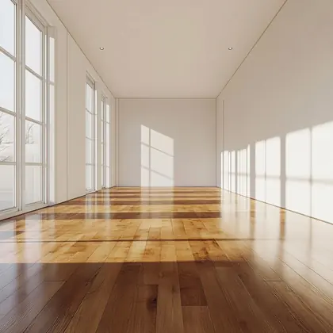
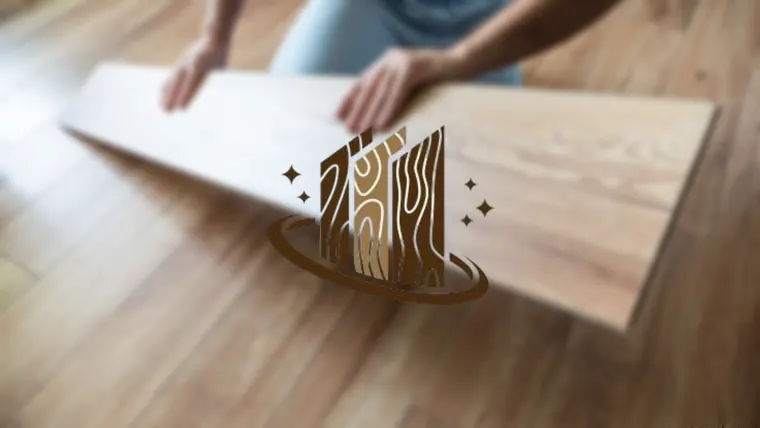

Faire Angebote
Transparente Preise, nachvollziehbare Positionen und Empfehlungen, die zum Projekt passen.
Bodenleger in München seit 2007
Parkett, Designboden, PVC, Kork oder Teppich: KS Parkett verbindet ehrliche Beratung, saubere Ausführung und hochwertige Materialien für private Wohnungen, Altbauprojekte und Gewerbeflächen in München.
Warum KS Parkett?
Wir planen jeden Boden passend zum Raum, zur Nutzung und zum Budget. Von der Untergrundprüfung bis zur letzten Sockelleiste bleibt die Kommunikation klar, die Baustelle sauber und das Ergebnis belastbar.
Transparente Preise, nachvollziehbare Positionen und Empfehlungen, die zum Projekt passen.
Präzise Verlegung, staubarme Renovierung und sorgfältige Details an Kanten und Übergängen.
Kurze Wege, feste Termine und persönliche Betreuung vom ersten Gespräch bis zur Abnahme.
Leistungen

Signature Service
Hochwertige Holzoberflächen, fachgerecht verlegt, geschliffen und versiegelt. Ideal für Wohnungen, Häuser und repräsentative Geschäftsräume.
Robuste, pflegeleichte Böden mit moderner Optik für stark genutzte Räume.
Alte Böden werden staubarm aufgearbeitet, geölt oder versiegelt und neu geschützt.
Wirtschaftliche Lösungen für Küche, Flur, Praxis, Büro und Gewerbeflächen.
Angenehme, leise und wohnliche Beläge für Schlafräume, Kinderzimmer und Büros.
Schnell verlegte, wirtschaftliche Böden mit Trittschalldämmung, Leisten und sauberen Übergängen.
Materialgefühl
Jede Oberfläche wirkt anders bei Tageslicht, Möbeln und Nutzung. Wir zeigen Muster, erklären Pflege und empfehlen eine Lösung, die optisch hochwertig bleibt und im Alltag funktioniert.

Ablauf
Wir prüfen Räume, Untergrund, Nutzung und Stilwunsch direkt bei Ihnen in München.
Sie erhalten eine klare Empfehlung mit fairem, transparentem Angebot.
Verlegung, Renovierung und Abschlussarbeiten erfolgen sauber und termintreu.
Kostenlose Erstberatung
Rufen Sie direkt an oder nutzen Sie das Kontaktformular. Wir beraten ehrlich, kalkulieren fair und finden die passende Lösung für Ihr Projekt.
FAQ
Kurz beantwortet, damit Sie Aufwand, Ablauf und Materialauswahl besser einschätzen können.
Persönlich beraten lassenJa. Wir arbeiten im Neubau, in Bestandswohnungen und bei Renovierungen möglichst staubarm und sauber.
Ja. Alte Parkettböden können geschliffen, geölt oder versiegelt und dadurch deutlich aufgewertet werden.
Designboden, Vinyl, PVC und robustes Parkett sind häufig sinnvoll. Die beste Wahl hängt von Nutzung, Budget und Untergrund ab.
Ja. Die Erstberatung vor Ort in München ist kostenlos und hilft, Material, Aufwand und Termine sauber einzuschätzen.